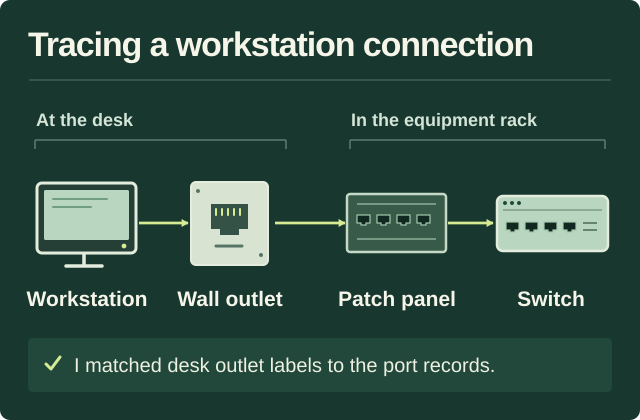

Aramex Dhaka Ltd.
Digital & Technology Intern
I connected Cat6 desk cables and matched outlet labels to port records during the Dhaka office move. I also helped the IT team prepare Windows 11 laptops and walked customers through linking their business accounts.
Read the Aramex case study